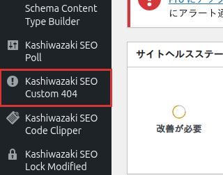

インストール・初期設定
Kashiwazaki SEO Custom 404 のインストールから初期設定までの手順を説明します。外部依存がないため、プラグインを有効化するだけですぐに利用を開始できます。
インストール方法
方法1: WordPress管理画面からインストール
1
WordPress管理画面にログインし、左メニューから プラグイン > 新規追加 を選択します。

2
検索ボックスに「Kashiwazaki SEO Custom 404」と入力し、表示されたプラグインの 今すぐインストール ボタンをクリックします。
3
インストール完了後、有効化 ボタンをクリックします。
方法2: ZIPファイルからインストール
1
プラグインのZIPファイルをダウンロードします。
2
WordPress管理画面の プラグイン > 新規追加 > プラグインのアップロード からZIPファイルを選択し、今すぐインストール をクリックします。
3
インストール完了後、有効化 ボタンをクリックします。
初期設定
プラグインを有効化すると、WordPress管理画面の 左メニューに「Kashiwazaki SEO Custom 404」の設定ページが追加されます。
設定手順
1
WordPress管理画面の左メニューから 設定 > Custom 404 を選択して設定画面を開きます。
2
カラーテーマを選択します。以下の5種類から選べます。
| テーマ名 | 説明 |
|---|---|
| Default Blue | 標準的な青を基調としたテーマ |
| Midnight Calm | 落ち着いたダークトーンのテーマ |
| Crisp Contrast | コントラストの高いシャープなテーマ |
| Forest Bath | 自然をイメージしたグリーン系テーマ |
| Sunset Glow | 温かみのあるオレンジ系テーマ |
3
必要に応じて、関連記事や最新記事の表示設定を調整します。
4
変更を保存 ボタンをクリックして設定を保存します。
ヒント
プラグインは有効化した時点でデフォルト設定（Default Blueテーマ）で動作します。特別な設定変更がなくても、すぐにSEOフレンドリーな404ページが機能します。
動作要件の確認
| 項目 | 要件 |
|---|---|
| WordPress | 5.0 以上 |
| PHP | 7.0 以上 |
| 外部依存 | なし |
メモ
本プラグインはAJAX通信、外部HTTP通信、Cronジョブ、メール送信のいずれも使用しません。サーバー環境に特別な要件はありません。